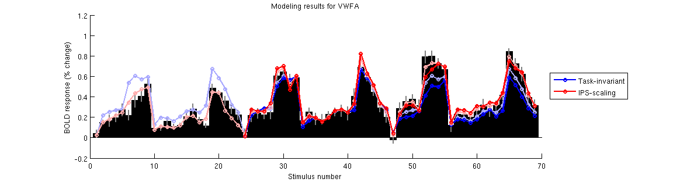

Example script illustrating the IPS-scaling model and various control models
Contents
Add code to the MATLAB path
addpath(genpath('/home/stone/kendrick/knkutils'));
Load data
a1 = load('experiment1.mat');
Prepare for model fitting
modelnames = { ...
'Flat' ...
'Task-invariant' ...
'Additive' ...
'AdditiveTS' ...
'Scaling' ...
'ScalingTS' ...
'AreaSpecificWord' ...
'AreaSpecificFace' ...
'IPS-additive' ...
'IPS-scaling' ...
};
whroi = [5 6];
whtopdown = 8;
n = 23;
nr = length(whroi);
nd = 3*n;
nfolds = 2*n;
nm = length(modelnames);
data = squish(permute(double(a1.groupbeta(whroi,:,:)),[2 3 1]),2);
datase = squish(permute(double(a1.groupbetase(whroi,:,:)),[2 3 1]),2);
datatopdown = squish(permute(double(a1.groupbeta(whtopdown,:,:)),[2 3 1]),2);
datatopdown = repmat(datatopdown,[1 size(data,2)]);
datatopdown(1:n,:) = NaN;
[nc,ncdist] = calcnoiseceiling(data(n+(1:2*n),:)',datase(n+(1:2*n),:)');
calculating noise ceiling..
..
.
.
.
..
.
..
.
.
..
..
.
.
done.
metricfun = @(x,y) calccod(x,y,1,0,0);
categories = a1.groupcategoryjudgment;
categories{1} = '';
Fit models
modelfit = NaN*zeros(nd,nr,nm);
modelparams = cell(1,nm);
modelpred = NaN*zeros(2*n,nr,nm);
modelperformance = NaN*zeros(nr,nm);
for xx=1:2
switch xx
case 1
xvalscheme = 0;
extraopt = {'dosave','modelfit'};
case 2
xvalscheme = ones(nfolds,nd);
for p=1:nfolds
ix = picksubset(1:2*n,[nfolds p]);
xvalscheme(p,n+ix) = -1;
end
extraopt = {};
[d,xvalschemeREV] = resamplingtransform(xvalscheme(:,n+(1:2*n)));
end
for mm=1:nm
switch mm
case 1
X = ones(nd,1);
seed0 = 0.1 * ones(1,1);
opt1 = struct('stimulus',X,'data',data, ...
'model',{{[] [-Inf(1,1); Inf(1,1)] @(p,x) x*p'}}, ...
'seed',seed0,'resampling',xvalscheme,'metric',metricfun, ...
'optimoptions',{{'Display','off'}},extraopt{:});
case 2
X = repmat(eye(n),[3 1]);
seed0 = @(ix) data(1:n,ix)';
opt1 = struct('stimulus',X,'data',@(ix) data(:,ix),'vxs',1:size(data,2), ...
'model',{ ...
{{[] [NaN(1,n); Inf(1,n)] @(p,x) x*p'} ...
{@(ss) ss [-Inf(1,n); Inf(1,n)] @(ss) @(p,x) x*p'}}}, ...
'seed',seed0,'resampling',xvalscheme,'metric',metricfun, ...
'optimoptions',{{'Display','off'}},extraopt{:});
case 3
X = repmat([eye(n) zeros(n,1)],[3 1]);
X(1:n,n+1) = 1;
X(n+(1:2*n),n+1) = 2;
seed0 = @(ix) [data(1:n,ix)' 0 0];
opt1 = struct('stimulus',X,'data',@(ix) data(:,ix),'vxs',1:size(data,2), ...
'model',{ ...
{{[] [NaN(1,n) NaN -Inf; Inf(1,n+2)] @(p,x) x(:,1:n)*p(1:n)' + p(n+x(:,n+1))'} ...
{@(ss) ss [-Inf(1,n) NaN -Inf; Inf(1,n+2)] ...
@(ss) @(p,x) x(:,1:n)*p(1:n)' + p(n+x(:,n+1))'}}}, ...
'seed',seed0,'resampling',xvalscheme,'metric',metricfun, ...
'optimoptions',{{'Display','off'}},extraopt{:});
case 4
X = repmat([eye(n) zeros(n,1)],[3 1]);
X(1:n,n+1) = 1;
X(n+(1:n),n+1) = 2;
X(2*n+(1:n),n+1) = 3;
seed0 = @(ix) [data(1:n,ix)' 0 0 0];
opt1 = struct('stimulus',X,'data',@(ix) data(:,ix),'vxs',1:size(data,2), ...
'model',{ ...
{{[] [NaN(1,n) NaN -Inf -Inf; Inf(1,n+3)] @(p,x) x(:,1:n)*p(1:n)' + p(n+x(:,n+1))'} ...
{@(ss) ss [-Inf(1,n) NaN -Inf -Inf; Inf(1,n+3)] ...
@(ss) @(p,x) x(:,1:n)*p(1:n)' + p(n+x(:,n+1))'}}}, ...
'seed',seed0,'resampling',xvalscheme,'metric',metricfun, ...
'optimoptions',{{'Display','off'}},extraopt{:});
case 5
X = repmat([eye(n) zeros(n,1)],[3 1]);
X(1:n,n+1) = 1;
X(n+(1:2*n),n+1) = 2;
seed0 = @(ix) [data(1:n,ix)' 1 1];
opt1 = struct('stimulus',X,'data',@(ix) data(:,ix),'vxs',1:size(data,2), ...
'model',{ ...
{{[] [NaN(1,n) NaN -Inf; Inf(1,n+2)] @(p,x) x(:,1:n)*p(1:n)' .* p(n+x(:,n+1))'} ...
{@(ss) ss [-Inf(1,n) NaN -Inf; Inf(1,n+2)] ...
@(ss) @(p,x) x(:,1:n)*p(1:n)' .* p(n+x(:,n+1))'}}}, ...
'seed',seed0,'resampling',xvalscheme,'metric',metricfun, ...
'optimoptions',{{'Display','off'}},extraopt{:});
case 6
X = repmat([eye(n) zeros(n,1)],[3 1]);
X(1:n,n+1) = 1;
X(n+(1:n),n+1) = 2;
X(2*n+(1:n),n+1) = 3;
seed0 = @(ix) [data(1:n,ix)' 1 1 1];
opt1 = struct('stimulus',X,'data',@(ix) data(:,ix),'vxs',1:size(data,2), ...
'model',{ ...
{{[] [NaN(1,n) NaN -Inf -Inf; Inf(1,n+3)] @(p,x) x(:,1:n)*p(1:n)' .* p(n+x(:,n+1))'} ...
{@(ss) ss [-Inf(1,n) NaN -Inf -Inf; Inf(1,n+3)] ...
@(ss) @(p,x) x(:,1:n)*p(1:n)' .* p(n+x(:,n+1))'}}}, ...
'seed',seed0,'resampling',xvalscheme,'metric',metricfun, ...
'optimoptions',{{'Display','off'}},extraopt{:});
case 7
X = repmat([eye(n) zeros(n,1)],[3 1]);
specialix = find(ismember(categories,'WORD'));
X(:,n+1) = 1;
X(n+specialix,n+1) = 2;
X(2*n+specialix,n+1) = 3;
seed0 = @(ix) [data(1:n,ix)' 1 1 1];
opt1 = struct('stimulus',X,'data',@(ix) data(:,ix),'vxs',1:size(data,2), ...
'model',{ ...
{{[] [NaN(1,n) NaN -Inf -Inf; Inf(1,n+3)] @(p,x) x(:,1:n)*p(1:n)' .* p(n+x(:,n+1))'} ...
{@(ss) ss [-Inf(1,n) NaN -Inf -Inf; Inf(1,n+3)] ...
@(ss) @(p,x) x(:,1:n)*p(1:n)' .* p(n+x(:,n+1))'}}}, ...
'seed',seed0,'resampling',xvalscheme,'metric',metricfun, ...
'optimoptions',{{'Display','off'}},extraopt{:});
case 8
X = repmat([eye(n) zeros(n,1)],[3 1]);
specialix = find(ismember(categories,'FACE'));
X(:,n+1) = 1;
X(n+specialix,n+1) = 2;
X(2*n+specialix,n+1) = 3;
seed0 = @(ix) [data(1:n,ix)' 1 1 1];
opt1 = struct('stimulus',X,'data',@(ix) data(:,ix),'vxs',1:size(data,2), ...
'model',{ ...
{{[] [NaN(1,n) NaN -Inf -Inf; Inf(1,n+3)] @(p,x) x(:,1:n)*p(1:n)' .* p(n+x(:,n+1))'} ...
{@(ss) ss [-Inf(1,n) NaN -Inf -Inf; Inf(1,n+3)] ...
@(ss) @(p,x) x(:,1:n)*p(1:n)' .* p(n+x(:,n+1))'}}}, ...
'seed',seed0,'resampling',xvalscheme,'metric',metricfun, ...
'optimoptions',{{'Display','off'}},extraopt{:});
case 9
X = [repmat(eye(n),[3 1]) (1:3*n)'];
seed0 = @(ix) [data(1:n,ix)' datatopdown(:,ix)' 0 0];
opt1 = struct('stimulus',X,'data',@(ix) data(:,ix),'vxs',1:size(data,2), ...
'model',{ ...
{{[] [NaN(1,n) NaN(1,3*n) -Inf -Inf; Inf(1,n+3*n+2)] ...
@(p,x) x(:,1:n)*p(1:n)' + nanreplace(p(n+3*n+1)*p(n+x(:,n+1))'+p(n+3*n+2))} ...
{@(ss) ss [-Inf(1,n) NaN(1,3*n) -Inf -Inf; Inf(1,n+3*n+2)] ...
@(ss) @(p,x) x(:,1:n)*p(1:n)' + nanreplace(p(n+3*n+1)*p(n+x(:,n+1))'+p(n+3*n+2))}}}, ...
'seed',seed0,'resampling',xvalscheme,'metric',metricfun, ...
'optimoptions',{{'Display','off'}},extraopt{:});
case 10
X = [repmat(eye(n),[3 1]) (1:3*n)'];
seed0 = @(ix) [data(1:n,ix)' datatopdown(:,ix)' 0 1];
opt1 = struct('stimulus',X,'data',@(ix) data(:,ix),'vxs',1:size(data,2), ...
'model',{ ...
{{[] [NaN(1,n) NaN(1,3*n) -Inf -Inf; Inf(1,n+3*n+2)] ...
@(p,x) x(:,1:n)*p(1:n)' .* nanreplace(p(n+3*n+1)*p(n+x(:,n+1))'+p(n+3*n+2),1)} ...
{@(ss) ss [-Inf(1,n) NaN(1,3*n) -Inf -Inf; Inf(1,n+3*n+2)] ...
@(ss) @(p,x) x(:,1:n)*p(1:n)' .* nanreplace(p(n+3*n+1)*p(n+x(:,n+1))'+p(n+3*n+2),1)}}}, ...
'seed',seed0,'resampling',xvalscheme,'metric',metricfun, ...
'optimoptions',{{'Display','off'}},extraopt{:});
end
results = fitnonlinearmodel(opt1);
switch xx
case 1
modelfit(:,:,mm) = squish(results.modelfit(1,:,:),2);
modelparams{mm} = squish(results.params(1,:,:),2);
case 2
modelpred(:,:,mm) = results.modelpred;
modelperformance(:,mm) = results.aggregatedtestperformance(1,:);
end
end
end
*** fitnonlinearmodel: started at 18-Feb-2017 09:35:51. ***
*** fitnonlinearmodel: outputdir = , chunksize = 2, chunknum = 1
*** fitnonlinearmodel: processing voxel 1 (1 of 2). ***
starting resampling case 1 of 1.
the seed is [0.100 ].
the estimated parameters are [0.332 ].
trainperformance is 73.16. testperformance is NaN.
aggregatedtestperformance is NaN.
*** fitnonlinearmodel: voxel 1 (1 of 2) took 0.6 seconds. ***
*** fitnonlinearmodel: processing voxel 2 (2 of 2). ***
starting resampling case 1 of 1.
the seed is [0.100 ].
the estimated parameters are [0.448 ].
trainperformance is 69.07. testperformance is NaN.
aggregatedtestperformance is NaN.
*** fitnonlinearmodel: voxel 2 (2 of 2) took 0.6 seconds. ***
*** fitnonlinearmodel: ended at 18-Feb-2017 09:35:51 (0.0 minutes). ***
[...SNIP...]
starting resampling case 46 of 46.
for model 1 of 2, the seed is [0.041 0.152 0.165 0.196 0.273 0.219 0.365 0.405 0.524 0.095 0.100 0.160 0.109 0.123 0.204 0.283 0.178 0.118 0.488 0.443 0.360 0.279 0.223 NaN NaN NaN NaN NaN NaN NaN NaN NaN NaN NaN NaN NaN NaN NaN NaN NaN NaN NaN NaN NaN NaN NaN 0.237 0.285 0.212 0.129 0.149 0.350 0.257 0.119 0.149 0.388 0.404 0.350 0.289 0.300 0.170 0.167 0.282 0.368 0.307 0.202 0.345 0.303 0.416 0.113 0.286 0.358 0.273 0.126 0.388 0.293 0.248 0.201 0.318 0.476 0.514 0.459 0.494 0.245 0.222 0.447 0.480 0.324 0.263 0.507 0.448 0.563 0.000 1.000 ].
the estimated parameters are [0.041 0.152 0.165 0.196 0.273 0.219 0.365 0.405 0.524 0.095 0.100 0.160 0.109 0.123 0.204 0.283 0.178 0.118 0.488 0.443 0.360 0.279 0.223 NaN NaN NaN NaN NaN NaN NaN NaN NaN NaN NaN NaN NaN NaN NaN NaN NaN NaN NaN NaN NaN NaN NaN 0.237 0.285 0.212 0.129 0.149 0.350 0.257 0.119 0.149 0.388 0.404 0.350 0.289 0.300 0.170 0.167 0.282 0.368 0.307 0.202 0.345 0.303 0.416 0.113 0.286 0.358 0.273 0.126 0.388 0.293 0.248 0.201 0.318 0.476 0.514 0.459 0.494 0.245 0.222 0.447 0.480 0.324 0.263 0.507 0.448 0.563 1.879 1.006 ].
for model 2 of 2, the seed is [0.041 0.152 0.165 0.196 0.273 0.219 0.365 0.405 0.524 0.095 0.100 0.160 0.109 0.123 0.204 0.283 0.178 0.118 0.488 0.443 0.360 0.279 0.223 NaN NaN NaN NaN NaN NaN NaN NaN NaN NaN NaN NaN NaN NaN NaN NaN NaN NaN NaN NaN NaN NaN NaN 0.237 0.285 0.212 0.129 0.149 0.350 0.257 0.119 0.149 0.388 0.404 0.350 0.289 0.300 0.170 0.167 0.282 0.368 0.307 0.202 0.345 0.303 0.416 0.113 0.286 0.358 0.273 0.126 0.388 0.293 0.248 0.201 0.318 0.476 0.514 0.459 0.494 0.245 0.222 0.447 0.480 0.324 0.263 0.507 0.448 0.563 1.879 1.006 ].
the estimated parameters are [0.009 0.151 0.179 0.216 0.247 0.346 0.432 0.471 0.493 0.079 0.111 0.102 0.098 0.121 0.203 0.214 0.149 0.186 0.444 0.441 0.264 0.188 0.122 NaN NaN NaN NaN NaN NaN NaN NaN NaN NaN NaN NaN NaN NaN NaN NaN NaN NaN NaN NaN NaN NaN NaN 0.237 0.285 0.212 0.129 0.149 0.350 0.257 0.119 0.149 0.388 0.404 0.350 0.289 0.300 0.170 0.167 0.282 0.368 0.307 0.202 0.345 0.303 0.416 0.113 0.286 0.358 0.273 0.126 0.388 0.293 0.248 0.201 0.318 0.476 0.514 0.459 0.494 0.245 0.222 0.447 0.480 0.324 0.263 0.507 0.448 0.563 3.247 0.733 ].
trainperformance is 98.78. testperformance is 43.45.
aggregatedtestperformance is 97.90.
*** fitnonlinearmodel: voxel 1 (1 of 2) took 3.8 seconds. ***
*** fitnonlinearmodel: ended at 18-Feb-2017 09:36:21 (0.1 minutes). ***
modelpred = modelpred(xvalschemeREV,:,:);
Inspect modeling results
rr = 1;
whmodel = [2 10];
figure; setfigurepos([100 100 950 250]); hold on;
xxx = 1:3*n;
xxxALT = n+(1:2*n);
yyy = data(:,rr);
yyyse = datase(:,rr);
h = bar(xxx,yyy,1);
set(h,'FaceColor','k');
set(errorbar2(xxx,yyy,yyyse,'v','k-','LineWidth',2),'Color',[.5 .5 .5]);
cmap0 = [0 0 1;
1 0 0];
h = []; h2 = [];
for mm=1:length(whmodel)
h(mm) = plot(xxx, modelfit(:,rr,whmodel(mm)),'o-','Color',(cmap0(mm,:)+2*[1 1 1])/3,'LineWidth',2);
h2(mm) = plot(xxxALT,modelpred(:,rr,whmodel(mm)),'o-','Color',cmap0(mm,:),'LineWidth',2);
end
ylabel('BOLD response (% change)');
legend(h2,modelnames(whmodel),'Location','EastOutside');
xlabel('Stimulus number');
title(sprintf('Modeling results for %s',a1.roilabels{whroi(rr)}));
